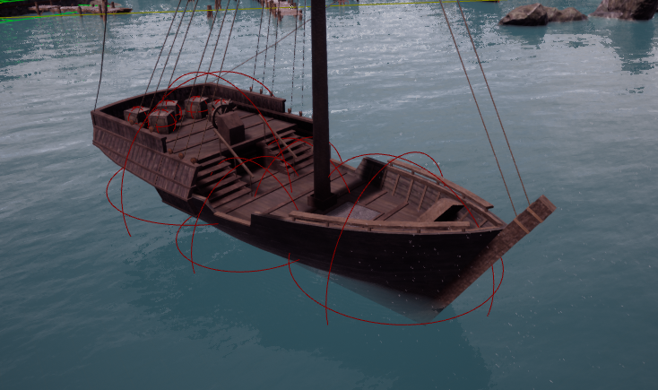

Water Buoyancy¶
To add buoyancy to objects within Unreal you will be required to make the object a physics object, attach a buoyancy component, and then attach buoyancy probes to the buoyancy component. The size of these probes determines how much buoyancy they supply, and weight of the mesh can be altered within the root object itself, within the physics tab.
When settings up buoyancy probes, you should have enough water probes positioned in such a way that they roughly cover the volume that the ships take up. Keep a close eye on the center of mass, as well as the overall mass of the object.
For Example, this ship has 4 probes:
For the probes to be able to generate waves and wakes, make sure to tick Enable Wave Grid on the Water Object.
For a more in depth example we have a video below which covers the basic buoyancy setup. Also discussed are more advanced setup for larger and more complex objects as well as good practices to ensure your objects are stable when used with trueWater.